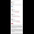

<!DOCTYPE html>
<html lang="en">
 <head>
<!-- Favicon -->
<link rel="shortcut icon" href="../../favicon.ico">
  <meta charset="utf-8"/>
  <title>
   Wasn't on twitter for 48 hours before my account was locked. (Links to original pics below sli.mg post &amp; in comments)
  </title>
  <meta content="Post on /v/Conspiracy from 2016-12-13 by ephesians5_11." name="description"/>
  <meta content="Wasn't on twitter for 48 hours before my account was locked. (Links to original pics below sli.mg post &amp; in comments)" property="og:title"/>
  <meta content="Post on /v/Conspiracy from 2016-12-13 by ephesians5_11." property="og:description"/>
  <link href="../../static/css/page.css" rel="stylesheet"/>
  <meta content="https://voat.conspiracy.hackliberty.org/thumbnails/f1/07/f1072c61-c547-4af0-873d-9d77f56f9b99.jpg" property="og:image"/>
  <meta content="https://voat.conspiracy.hackliberty.org/v/conspiracy/1483416.html" property="og:url"/>
  <meta content="width=device-width, initial-scale=1" name="viewport"/>
  <link href="https://voat.conspiracy.hackliberty.org/v/conspiracy/1483416.html" rel="canonical"/>
  <meta content="article" property="og:type"/>
  <meta content="Voat /v/Conspiracy Archive" property="og:site_name"/>
  <meta content="en_US" property="og:locale"/>
  <meta content="summary_large_image" name="twitter:card"/>
  <meta content="Wasn't on twitter for 48 hours before my account was locked. (Links to original pics below sli.mg post &amp; in comments)" name="twitter:title"/>
  <meta content="Post on /v/Conspiracy from 2016-12-13 by ephesians5_11." name="twitter:description"/>
  <meta content="https://voat.conspiracy.hackliberty.org/thumbnails/f1/07/f1072c61-c547-4af0-873d-9d77f56f9b99.jpg" name="twitter:image"/>
 </head>
</html>
<body class="dark">
 <div id="container">
  <!-- array (
  'submissionid' => 1483416,
  'creationDate' => '2016-12-13 04:54:08',
  'domain' => 'sli.mg',
  'formattedContent' => NULL,
  'isAdult' => 0,
  'isAnonymized' => 0,
  'subverse' => 'Conspiracy',
  'thumbnail' => 'f1072c61-c547-4af0-873d-9d77f56f9b99.jpg',
  'title' => 'Wasn\'t on twitter for 48 hours before my account was locked. (Links to original pics below sli.mg post & in comments)',
  'url' => 'http://sli.mg/B0Ndu0',
  'userName' => 'ephesians5_11',
  'archivedLink' => NULL,
  'archivedDomain' => NULL,
  'isDeleted' => 0,
) -->
  <div style="text-align:center; font-size:24px; font-weight:bold;">
   <a href="../../index.html" style="text-decoration: none; color: inherit;">
    Voat /v/Conspiracy Archive
   </a>
  </div>
  <div class="content" role="main">
   <div class="sitetable linklisting" id="siteTable">
    <div class="submission id-1483416 link type-text" id="submission-1483416">
     <a name="submissionTop">
     </a>
     <p class="parent">
     </p>
     <a class="thumbnail may-blank" href="http://sli.mg/B0Ndu0" target="_self">
      
     </a>
     <div class="entry unvoted">
      <p class="title">
       <a class="title may-blank" href="http://sli.mg/B0Ndu0" tabindex="1" target="_self" title="Wasn't on twitter for 48 hours before my account was locked. (Links to original pics below sli.mg post &amp; in comments)">
        Wasn't on twitter for 48 hours before my account was locked. (Links to original pics below sli.mg post &amp; in comments)
       </a>
       <span class="domain">
        (
        <a href="https://archive.searchvoat.co/search.php?d=sli.mg">
         sli.mg
        </a>
        )
       </span>
      </p>
      <p class="tagline">
       submitted
       <time datetime="2016-12-13T04:54:08+00:00" title="12/13/2016 4:54:08 AM">
        2016-12-13T04:54
       </time>
       by
       <span class="userattrs">
        <a class="author may-blank" href="https://archive.searchvoat.co/search.php?u=ephesians5_11">
         ephesians5_11
        </a>
       </span>
      </p>
      <ul class="flat-list buttons">
       <li class="first">
        <a class="comments may-blank" href="https://archive.searchvoat.co/v/Conspiracy/1483416" rel="nofollow">
         3 comments
        </a>
       </li>
      </ul>
     </div>
     <div class="child">
     </div>
     <div class="clearleft">
     </div>
    </div>
    <div class="clearleft">
    </div>
   </div>
   <div class="horizontal-line">
   </div>
   <div class="commentarea">
    <div class="sitetable nestedlisting" id="siteTable">
     <div class="child id-7205453 comment even" style="">
      <div class="entry unvoted">
       <div class="noncollapsed" id="7205453" style=";">
        <p class="tagline">
         <a class="author may-blank" href="https://archive.searchvoat.co/search.php?u=ephesians5_11">
          ephesians5_11
         </a>
         <span class="userattrs">
         </span>
         <time datetime="2016-12-13T14:02:14+00:00" title="12/13/2016 2:02:14 PM">
          2016-12-13T14:02
         </time>
        </p>
        <div class="usertext-body may-blank-within" id="commentContent-7205453">
         <div class="md">
          <p>
           <p>
            They are the links to the images I uploaded to twitter when I made the tweets, not links that I typed in. I haven't checked if they work; I just assume that twitter got rid of them. The sli.mg links are shorter and easier to type, and having the old links struck out is an easy way of saying "don't bother with the old link, follow this one." Good question.
           </p>
          </p>
         </div>
        </div>
        <ul class="flat-list buttons">
         <li class="first">
          <a class="bylink" href="https://archive.searchvoat.co/v/Conspiracy/1483416/7205453" rel="nofollow">
           link
          </a>
         </li>
        </ul>
       </div>
      </div>
     </div>
     <div class="child id-7204349 comment even" style="">
      <div class="entry unvoted">
       <div class="noncollapsed" id="7204349" style=";">
        <p class="tagline">
         <a class="author may-blank" href="https://archive.searchvoat.co/search.php?u=curomo">
          curomo
         </a>
         <span class="userattrs">
         </span>
         <time datetime="2016-12-13T11:05:56+00:00" title="12/13/2016 11:05:56 AM">
          2016-12-13T11:05
         </time>
        </p>
        <div class="usertext-body may-blank-within" id="commentContent-7204349">
         <div class="md">
          <p>
           <p>
            Why would you even want to be on twitter? Pretty much the most corrupt site you'll find. Worse that Reddit, Tumblr, and Instagram combined.
           </p>
          </p>
         </div>
        </div>
        <ul class="flat-list buttons">
         <li class="first">
          <a class="bylink" href="https://archive.searchvoat.co/v/Conspiracy/1483416/7204349" rel="nofollow">
           link
          </a>
         </li>
        </ul>
       </div>
      </div>
     </div>
     <div class="child id-7201375 comment even" style="">
      <div class="entry unvoted">
       <div class="noncollapsed" id="7201375" style=";">
        <p class="tagline">
         <a class="author may-blank" href="https://archive.searchvoat.co/search.php?u=Diogenes_The_Cynic">
          Diogenes_The_Cynic
         </a>
         <span class="userattrs">
         </span>
         <time datetime="2016-12-13T04:55:07+00:00" title="12/13/2016 4:55:07 AM">
          2016-12-13T04:55
         </time>
        </p>
        <div class="usertext-body may-blank-within" id="commentContent-7201375">
         <div class="md">
          <p>
           <p>
            Its the world power structure protecting the world power structure.
           </p>
          </p>
         </div>
        </div>
        <ul class="flat-list buttons">
         <li class="first">
          <a class="bylink" href="https://archive.searchvoat.co/v/Conspiracy/1483416/7201375" rel="nofollow">
           link
          </a>
         </li>
        </ul>
       </div>
      </div>
     </div>
    </div>
   </div>
  </div>
 </div>
<!-- Footer Section -->
<footer class="container-fluid mt-3">
  <p class="small mb-0">
    /v/conspiracy archive has 42504 posts and 159856 total comments.
    <a href="https://git.hackliberty.org/c0mmando/voat-conspiracy-archive/">source code</a>.
  </p>
</footer>

<script src="../../static/js/jquery-3.7.1.slim.min.js"></script>
<script src="../../static/js/comments-toggle.js"></script>

</body>
